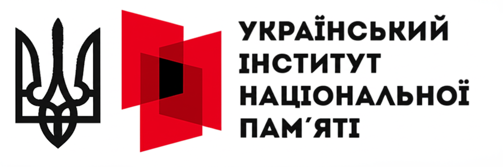

НовинаУкраїнський інститут національної пам’яті. Інформаційні матеріали до Дня Державного Прапора та Дня незалежності України – 2025
Вступ Ключові тези та повідомлення Про День Державного Прапора України Незалежність України – маяк свободи Етапи боротьби за незалежність у ХХ–ХХІ століттях Як РФ намагалася знищити незалежність України? Вступ На вшанування…
Детальніше